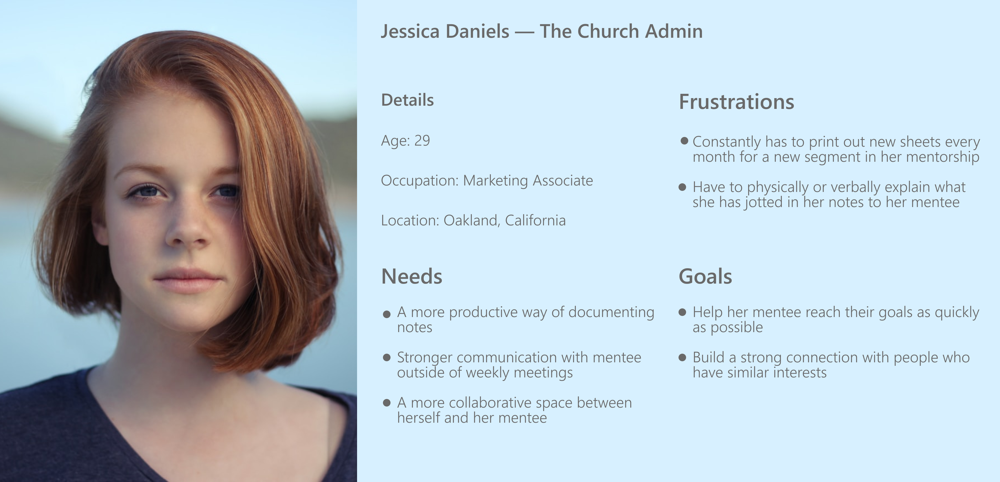

As a humans, we naturally try to achieve new heights or goals, but sometimes, we just don't have the proper tools or guidance to reach those goals. With a mentor, you are able to make acheiving those goals much more tangible. Restvo is a company that establishes connections within a local community through its mentoring application. Through this application, users can get discover mentors, set goals, and gain insights to help reach those over-arching endeavors. Restvo's main aspiration is to build communities and valuable networks between individuals.
On the Restvo application, we allow users to set up voice and video meetings. Within a mentorship relationship, many different learning points can be discussed in a daily, weekly, or monthly meeting. The problem is, after said meeting, managing these points on a separate sheet of paper or even an entirely different product can complicate the workflow. This creates an always two-step process to access important information that is vital to a specific mentorship relationship.
To mitigate the need to recollect thoughts and learning points on a seperate sheet of paper or a different application, we are introducing the notes feature, which would allow our users to jot down thoughts on a document that is shared with all members within a mentorship for rapid accessibility before, during, and after a scheduled meeting.
A documentation feature has a surplus amount of things you can do to make the user's note taking experience pleasurable. For Restvo, we had a niche group of users that only needed certain tools to complete their tasks. The challenge was selecting the most essential tools and ridding of the others without hindering the experience that would come with the other functionalities.
With this new feature, the goal was to streamline the workflow within a mentorship relationship so that our users could move more quickly towards their over-arching endeavors.
Starting, we reached out to as small group of users (a local church) and asked them a few questions that targeted their note taking experiences. Being that our primary users are church communities, a lot of the users are administrators of churches. These users mentioned that they've documented notes on a physical form every month. They talked about how these were a hassle to file and search for when misplaced. Hearing these pain points drove us to the conclusion that our users needed...
A product analysis was performed to analyze the distilled methods that were used to create a documentation product. Here are the products that I analyzed.
After conducting the product analysis and gaining insights from some of our users, I put together a problem statement that identified the gap between current problem and the goal"How might we create a simple and inclusive note-taking experience?"
The collected information, I created a persona that represented a bulk of the users on Restvo.
You can access this prototype here.
Communication within a mentoring relationship is the key to positive outcomes. With a viable method of mending that communication gap, these postiive outcome can become more and more persistent. This also goes for the outcomes of product development. A huge learning point for me was to be over-communicative, being that I was designing this on my own for the first part. My engaement with the team has allowed me to be vulnerable and exposed to different ideas and concepts that drove towards the solution. Communication is key.